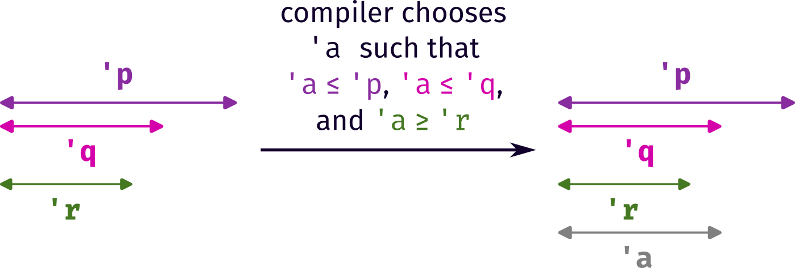
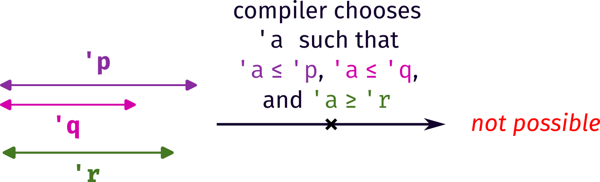
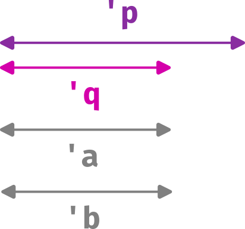

Disclaimer: I don’t actually write Rust for anything, and the following is entirely based on my interpretation of one single paragraph in the Rust book, so I may be completely wrong.
Introduction
At today’s Rust reading group we were discussing lifetimes. Up until now, most of the features covered in the Rust book are very similar to those in Haskell (e.g. pattern matching, traits which map to typeclasses, etc.), so I’ve been feeling reasonably comfortable. But lifetimes are something very alien to me.
If you don’t think about it too hard, the standard example given in Section 10.3 of the Rust book seems almost self-evident. I added a few comments (in lines 10, 13, and 15), specifying the ‘true’ lifetimes of x, y, and result as 'p, and 'q, and 'r respectively, to make the following discussion clearer. (You can use the Rust playground to execute the code snippets.)
fn longest<'a>(x: &'a str, y: &'a str) -> &'a str {
if x.len() > y.len() {
x
} else {
y
}
}
fn main () {
// longer lifetime, let's call this 'p
let string1 = String::from("long string is long");
{
// shorter lifetime, let's call this 'q
let string2 = String::from("xyz");
// lifetime of the result, let's call this 'r
let result = longest(string1.as_str(), string2.as_str());
println!("The longest string is {}", result);
};
}Unfortunately, I found some aspects of the book a little bit confusing. For example, the caption of Listing 10-21 (where longest() is defined) says:
The
longestfunction definition specifying that all the references in the signature must have the same lifetime'a
It is not really obvious how this is true, because string1 and string2 certainly do not have the same lifetime.
In fact, if we think about lifetimes in the same way we do generics, then it is not clear how the function can even be called with two arguments that do not have the same lifetime.
Lifetime semantics
The resolution to this seeming contradiction is that the lifetime 'a passed in is not the lifetime of string1, nor is it the lifetime of string2. It is an entirely separate lifetime which the compiler determines, based on the lifetimes of the two arguments. This is expanded upon in a later paragraph, which in my opinion is the key to understanding all of this:
When we pass concrete references to
longest, the concrete lifetime that is substituted for'ais the part of the scope ofxthat overlaps with the scope ofy.In other words, the generic lifetime'awill get the concrete lifetime that is equal to the smaller of the lifetimes ofxandy.Because we’ve annotated the returned reference with the same lifetime parameter'a,the returned reference will also be valid for the length of the smaller of the lifetimes ofxandy.
So, the compiler has to find a concrete value for 'a which is valid for both x and y. That is to say, the compiler has to conjure up a new lifetime 'a which is a subset of both the true lifetimes 'p and 'q. If it is not possible to do this, then the compiler should complain. Of course, since the two true lifetimes overlap with each other, the compiler can choose 'a to be the smaller of the two, which happily satisfies the requirement above.

longest, step 1.(If you’re mathsy, you might like to think of this as an existential quantifier: the compiler must prove that there exists some lifetime 'a such that 'a ≤ 'p and 'a ≤ 'q.)
Notice that we haven’t considered the lifetime of the return value yet, 'r. This is because the return lifetime is not used to calculate what 'a should be. Instead, once the compiler has calculated 'a, it then assigns this lifetime to 'r. It must then check that the return value is not used outside of this lifetime.

longest, step 2.I suppose, then, that for a function with annotated lifetimes, there are two ways in which the compiler may complain:
The compiler cannot find a lifetime
'awhich satisfies all input variables. I have not yet been able to come up with an example of this. (Suggestions are welcome.)The lifetime
'ais found, but the return value is used outside of this. An example of this is provided in Listing 10-23 of the Rust book:
Lifetime bounds
With this understanding of the simple example, we can now tackle a slightly more complicated one, which came up during the reading group. This one uses so-called ‘lifetime bounds’: the 'b: 'a syntax in the function signature stipulates that the lifetime 'b must be at least as long as the lifetime 'a.
fn longest2<'a, 'b: 'a>(x: &'a str, y: &'b str) -> &'a str {
if x.len() > y.len() {
x
} else {
y
}
}
fn main () {
// longer lifetime, let's call this 'p
let string1 = String::from("long string is long");
{
// shorter lifetime, let's call this 'q
let string2 = String::from("xyz");
let result = longest2(string1.as_str(), string2.as_str());
println!("The longest2 string is {}", result);
};
}Since the true lifetimes of the variables are such that'q < 'p, it is not clear why the compiler should accept this. After all, the function signature seems to suggest that the second parameter must outlive the first.
However, the entire point is that 'a and 'b are not the same as 'p and 'q; they are new lifetimes which are conjured up by the compiler. Going along the lines of the discussion above, the compiler must now find two lifetimes 'a and 'b which satisfy the following constraints:
'a≤'p(because of the first parameter)'b≤'q(because of the second parameter)'b≥'a(because of the lifetime bound)
One can see that if we instantiate both lifetimes 'a and 'b as being equal to 'q, then all three of these requirements are met.

longest2.Is longest2 more restrictive?
With this knowledge, we might now consider whether there any possible cases in which using longest2 will raise a compiler error, while longest compiles just fine. (Or vice versa!)
My inclination is no: in other words, I think longest and longest2 are entirely equivalent. My proof is only halfway there, though.
If we can satisfy the function signature for
longest, then we can satisfy that forlongest2.If we have a valid call to
longest, that means that there exists some lifetime'awhich satisfies both'a≤'pand'a≤'q'.If we then switch this call to one of
longest2, we need to find a new lifetime'bwhich obeys the three requirements above, namely:'a≤'p,'b≤'q, and'b≥'a. The first of these is already satisfied, and we can satisfy the other two by simply choosing'bto be equal to'a, making the call tolongest2also valid.If we can satisfy the function signature for
longest2, then we can satisfy that forlongest.If we have a valid call to
longest2, then there exists two lifetimes'aand'bwhich satisfy'a≤'p,'b≤'q, and'b≥'a.The requirements for
longestare that we must find a lifetime'c(different letter chosen to avoid clashes) for which'c≤'pand'c≤'q. If we just choose'cto be equal to'a, we are done.
Collectively, this means that any combination of inputs that forms a valid call to longest will also form a valid call to longest2, and vice versa.
However, there’s also the return value to consider. In theory, it could be possible that the values returned by longest and longest2 might have different lifetimes, and thus it would be possible to use a value obtained from longest in a location where using a value from longest2 would lead to an error (or vice versa)..
To be clear, I don’t actually think this is the case. Intuitively, it seems to me that the return value 'r in both cases should simply the intersection of the true lifetimes 'p and 'q); but I haven’t actually proven this.